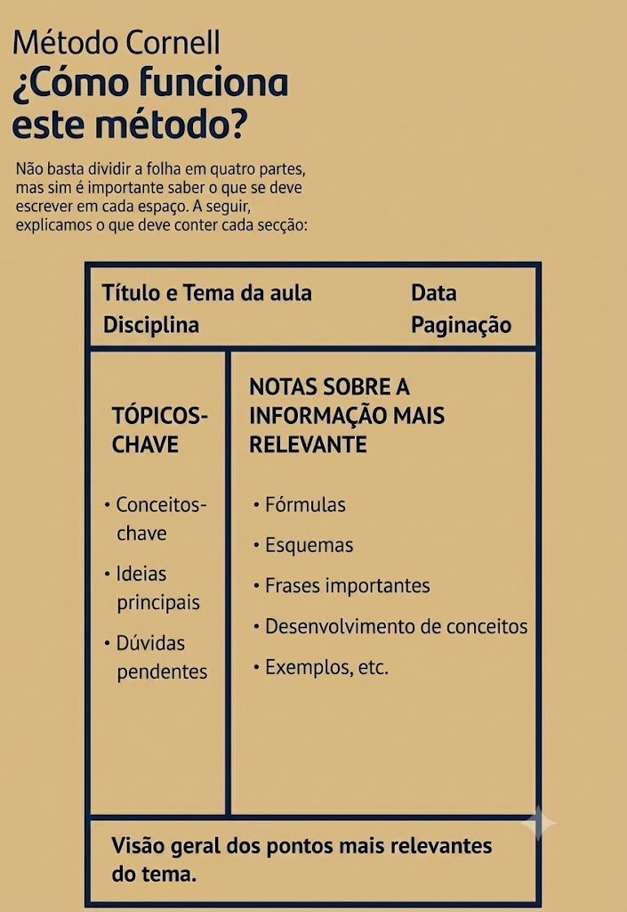

Um sistema de anotação que divide a página em pistas, notas e resumo, e cujo verdadeiro valor aparece na hora de revisar.
O método Cornell, criado na universidade de mesmo nome, divide a folha em três áreas: uma coluna estreita à esquerda para palavras-chave e perguntas (as “pistas”); uma área maior à direita para as anotações detalhadas; e uma faixa na base para um resumo escrito com as próprias palavras, logo após a aula.
É um sistema de anotação, mas com uma estrutura pensada para transformar o caderno em ferramenta de revisão ativa, não só num registro morto.

Manter o material organizado já ajuda, mas não é o principal. O valor real aparece na revisão: você cobre a coluna da direita e tenta responder, de memória, às pistas e perguntas da esquerda. Isso é active recall na prática.
O resumo na base, escrito com suas palavras logo após a aula, força uma primeira reorganização do conteúdo enquanto ele está fresco, somando um componente de elaboração ao processo.
O caderno Cornell não serve para reler: serve para se testar. A coluna de pistas é o seu banco de perguntas.
Divida a página: coluna estreita à esquerda, área ampla à direita e uma faixa na parte de baixo.
Durante a aula ou leitura, registre as ideias na coluna da direita, sem se preocupar com a esquerda ainda.
Logo depois, releia e transforme os pontos-chave em palavras e perguntas curtas na coluna da esquerda.
Na faixa inferior, sintetize a página inteira em poucas linhas, com as suas palavras.
Cubra a área da direita e use só as pistas da esquerda para recuperar o conteúdo de memória, conferindo depois.
O passo que quase todo mundo pula é o que mais importa: revisar cobrindo as notas. Sem essa etapa, o Cornell vira só um caderno bonito e a recuperação ativa não acontece.
Os principais editais e oportunidades abertos para estudantes brasileiros, direto na sua caixa de entrada. Gratuito.